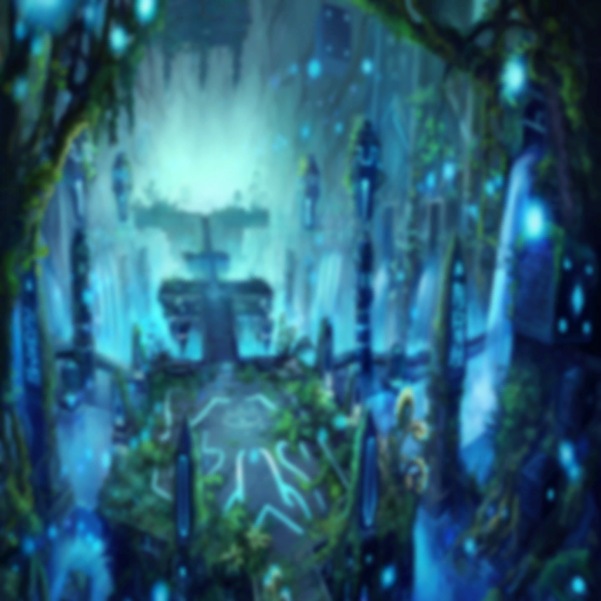

|
 |
| |
死ぬんだと思ったら
思い出した |
| |
最悪な一日のハナシ |
| |
もう生きられねえんだと感じたら
思いついた |
| |
最高の一日のハナシ |
| |
全部が無駄じゃねえって思える生活 |
| |
ここにいたってイイんだって
どこにいかなくったってイイんだって… |
| |
いないものなんて
いないんだって信じられる生活 |
|
| |
十の戒めが、唯一
意志を束ねる繋がり |

ネロ |
それが… |
ネロ |
黒き世界で
自分を見失わない為の唯一の…………？ |
 |
| ？？？ |
そうそして
その鎖を引くのが、貴方 |
| ヴァーニル |
!? |
| ヴァーニル |
…誰だ。お前は |

ドライ |
ボクが誰かなんて
大したことじゃありませんが… |
ドライ |
はじめまして
見る専のファンです |

ソル |
ドライ…………っ!? |
ドライ |
彼曰く、いい奴
…でしょう？ |
ドライ |
いいやつを魅せてください？ |
ソル |
…………はッ
時間を稼いで
見せ場を譲ったつもりか？ |

ズィーヴァ |
お待たせ。リーダー |
ソル |
少し遅かったな |
ズィーヴァ |
任務終わりで直行したのに
その言い草は何よ |
ソル |
ファンが見てるぜ |
ズィーヴァ |
は?? |

ノイン |
ハッハハハハハッ！
暴れ足りねえと思ってたトコロだ！
ヤろうぜ、なァズィーヴァ!! |
ズィーヴァ |
や、もう、ほんと声デカい
筋肉スゴイ暑苦しい見苦しい酒臭い
絢爛の『ケ』の字もない近寄らないで～ |
ノイン |
『毛』ならあるじゃねえかァッ!? オゥッ!?
それに変な匂いがすんのはお前も同じだろ！ |
ズィーヴァ |
文脈聞いてた!?
あとコレは香水だからッ！
鼻もげろクソノイン!! |
ノイン |
くせぇ～ |
ズィーヴァ |
あーもームッカつく！ ムッカつく～ッ！ |
ソル |
同じ任務帰りで元気だな |
ズィーヴァ |
うるさいセンパイのお守りは大変よ |
ノイン |
あァ？ 俺のほうが後輩だろぉ？
お前“七番”で、俺が“九番”
数字も数えられねえのかバカかよ |
ズィーヴァ |
…センパイなのよ |
ノイン |
ハハハッ！
数がデケエほうが偉いってことか
ふたつもデケエもんな、俺ぁお前より！ |
ズィーヴァ |
そうよ、ふたつもね |
ソル |
… |
ノイン |
…！
おォいソル…お前
よく見りゃ死にかけじゃねえか |
ズィーヴァ |
よく見なくてもね |
ソル |
血まみれの出迎えで悪いな |
ノイン |
ビール9杯分は
血ィ吐いちまってんじゃねえかァッ!?
エェッ!? オォイ!? アァッ!? |
ズィーヴァ |
なんで嬉しそうなのよ致死量よソレ
その目分量で出血量を判断するの
ヤメなさいよ |
ソル |
そうなんだよノイン
血も足りなければ力も足りない |
ソル |
助太刀してくれよ |
ノイン |
水くせえッ！
空を手に入れる前の前哨戦だろぉ!?
バチバチにハデに行こうぜェッ!! |

フィーア |
ご一緒させてもらえる？ |

フューリー |
偽りの支配者は退けました |

ゼン |
羽虫も同然 |

アハト |
追いつきましたよ。ソル |
ソル |
待たせたな。ヴァーニル |
| ヴァーニル |
… |
アハト |
あれが、ソルの言う
私たちの“ひとり目の敵”… |
ソル |
お前たちのご登場まで
待っていてくれてな |
| ヴァーニル |
野暮だろう？
一番燃えるシチュエーションだ |
| ヴァーニル |
それに、言ったはずだ
『お前の意志を見せてくれと』 |
| ヴァーニル |
『それはすべて
お前が誰かとわかち合うものだ』と |
ソル |
紹介しようか
ドラゴンスレイヤーズだ |
| ヴァーニル |
カッコイイな |
ネロ |
（…解らない） |
ソル |
やっぱり俺は人間だったよ
ひとりじゃアンタに勝てやしない |
ソル |
『先人の遺した意志を引き継ぐ』
それを言い訳に、戒めという言葉で
意志を縛って |
ソル |
仲間を見捨てて生贄に捧げて
そうして力を得させて
世界征服を企んでやろうなんて… |
ソル |
そんな自分が
“人でなし”だと思っていたが |
ネロ |
（…） |
ソル |
だが十戒衆の奴らは
それぞれが意志を持って生きてる
進んでる。消えた者も引っ張って |
ズィーヴァ |
… |
ソル |
全部、無駄じゃねえ
俺たちが誰かの“意志”を遺せば
いなくなっても生活の跡が遺る |
フューリー |
… |
ソル |
死してもともにいる
生きてることがわかる |
フィーア |
戒めの鎖はソルが引いてくれて… |
アハト |
その鎖を掴んで
私たち十戒衆は進んでいます |
ゼン |
鎖を掴むは我らが意志 |
ノイン |
俺たちの勝手だ |
ソル |
正しい世界を逆恨み
独りじゃ怖ぇから寄り添い合う |
ソル |
そんな意地の悪い人間だったよ |
ソル |
アンタみたいな“先駆者”じゃない
アンタが拓いた道に立つ
“道しるべ”くらいでいい |
ネロ |
…………!? |
ソル |
怖い者識らずの哲学者でいい |
ネロ |
（何が起こっている…？
彼らのアルケミィが
ソルに収束している…!?） |
ソル |
ゲロ吐くほど努力して |
ソル |
パクりが本物を超えることもある |
ソル |
呪わしい祈りが… |
ソル |
夢と器を鍛え上げていく |
ソル |
俺はソル |
ソル |
空っぽなりに意志はある |
ソル |
青くせえぐらい
カッコつけたいってな |
 |
| ヴァーニル |
… |
| ヴァーニル |
眩しいな |
| ヴァーニル |
ロストブルーの太陽か |
ネロ |
…!! |
ネロ |
ヴァーニル、我も…！ |
| ヴァーニル |
ネロ、お前は見届けろ |
ネロ |
…我も、識りたいのだ |
| ヴァーニル |
… |
ネロ |
我の与えた力が創った世界を識りたい
それは我が壊すべきか、それとも………… |
|
ソル |
──幻影神駒── |
| ヴァーニル |
パクりやがった |
ゼン |
見事だ |
ソル |
駒をパクって
“成って”やったぜ |
| ヴァーニル |
応用が効いたか |
ネロ |
ヴァーニル…！ |
| ヴァーニル |
寂しいのか |
ネロ |
な、何 |
| ヴァーニル |
寝床に放っておかれるのが |
ネロ |
…さ、寂しい、少し |
フューリー |
あの聲は… |
ゼン |
聞き覚えがある |
フィーア |
ヴェーダの境戒次元で… |
ズィーヴァ |
私たちに力を与えた…？ |
| ヴァーニル |
お前も、竜だったな |
アハト |
…竜 |
| ヴァーニル |
戦ってみたいんだろ？
支配階級に刃を向ける愚者どもと
天空の王者の血が騒ぐんだろ？ |
ネロ |
…過去の我など解らぬが
そうなのかもしれぬ |
ネロ |
これが
自分を識るということか？ |
| ヴァーニル |
素直になれよ
楽しみなんだろ？
どんな逆転劇が待っているのか |
ネロ |
………… |
ネロ |
ワクワク、だ |
| ヴァーニル |
紹介しよう
自分探しの為に世界を破壊しようとする黒竜
ネロだ |
アハト |
ネ、ロ… |
ソル |
自分が力を施した相手を
自分で壊そうって？ |
フィーア |
まるで子供ね？ |
ネロ |
何かおかしなことがあるか？ |
| ヴァーニル |
貸しつけたカネは
利息を加えて返してくれよ |
ソル |
暴利が |
ズィーヴァ |
義理はないわね
アタシのモンはアタシのモンよ |
フューリー |
失ったものの大きさが
私たちの力ですから |
ネロ |
うぬらが世界を壊すに不足なら
我が世界を覆す |
ネロ |
そうして我は
我の力のほどを識る |
ゼン |
どちらにせよ
貴様を斬り捨てねば
頂上の真理には辿り着けまい？ |
ネロ |
我による破壊を拒むなら示せ
うぬらがひっくり返そうとする世界の力を |
ソル |
…ここで我らが“力自慢”から一言 |
ノイン |
話が長くてウトウトしちまったが
要はアレだろォッ!? 決まってらぁ |
ノイン |
とりあえず、かかってこいよ!! |
| ヴァーニル |
満場一致だな？ ネロ |
ネロ |
愉快な戒めだ |
ソル |
俺たちのルールだ |
| ヴァーニル |
止めてみろ、十戒衆 |
ネロ |
我らの聲が聞こえるのなら |
|  |
| ソル・ヴァーニル |
──幻影神駒── |
|
|
ソル |
靴音が聞こえるか？ |
| ヴァーニル |
進歩したか？ |
ソル |
おかげサマでな…ッ！ |
| ヴァーニル |
…!? |
ソル |
アンタの名をパクったよ |
| ヴァーニル |
何…!? |
ソル |
往くぜ |
ソル |
────ヴァン |